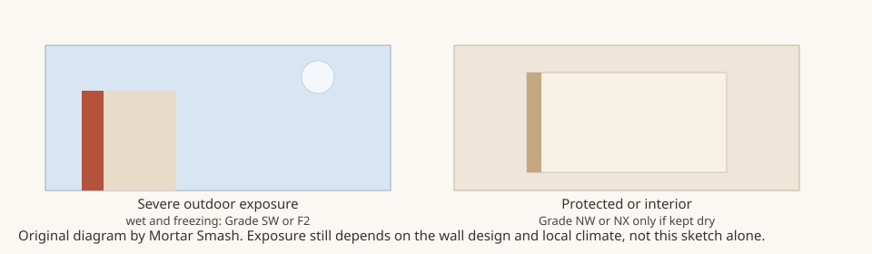

Mortar Smash › Trade guides › Brick frost resistance grades
Short answer
If the brick will get wet and then freeze, specify a severe-weathering unit: ASTM Grade SW (or SX for pavers) in the United States, or an F2 freeze-thaw rating in the UK. Grade MW or MX is for more moderate exposure. Grade NW or NX is typically for interiors or for brick kept from water and freezing. In severe UK exposure, guidance also points to a low soluble-salt rating (S2) and a mortar that can cope with those conditions. Confirm the grade on the delivery ticket and the manufacturer's certificate, not by colour.
US grades: SW, MW and NW
BIA Technical Note 9A classifies durability by how severe the weather and the exposure are. For ASTM C62 building brick, C216 facing brick, C652 hollow brick and C902 pavers, the letters mean:
- S — severe weathering
- M — moderate weathering
- N — negligible or no weathering
Facing brick (C216) and hollow brick (C652) are graded SW or MW. Building brick (C62) also includes Grade NW. Pedestrian pavers (C902) use SX, MX and NX. The grades are based mainly on compressive strength, water absorption and saturation coefficient (the C/B ratio) under ASTM C67. Brick that do not meet those physical limits can still qualify through documented alternatives in the standard, including a freeze-and-thaw test.
Technical Note 9B adds the practical rule used on site. Most manufacturers make brick to the most severe designation, SW or SX, so they can ship it across the country. Some produce only moderate-weathering MW or MX brick. Grade NW or NX brick are typically confined to interior applications, or to places protected from water absorption and freezing. Ask the manufacturer for a certificate that the product meets the grade you specified.
The same note says durability can be shown either by the strength, absorption and saturation-coefficient route, or by compressive strength plus 50 cycles of the freeze-and-thaw test. Do not assume a dense-looking or high-strength brick is Grade SW unless the paperwork says so.
UK ratings: F2 and S2
The Modern Masonry Alliance Housing Easy Guide on bricks says durability of brickwork is about resistance to freeze/thaw cycles. Water that freezes and thaws in saturated brickwork can spall the face, and soluble salts in some clays can attack Portland cement mortar. In severely exposed locations the guide says this may require F2, S2 brick — F2 for repeated freeze/thaw conditions, S2 for a low category of active soluble salts — together with reduced-sulphate cement in the mortar. It points to Brick Development Association guidance on severely exposed brickwork and to NHBC technical guidance for exposure and durability.
Engineering bricks used below a damp-proof course, in retaining walls or in other wet work should carry the frost and salt ratings required by the specification, not only a Class A or Class B strength figure. See which bricks for which jobs for how those classes are used.
Exposure is about the wall, not just the town
A brick in a sheltered gable does not see the same wetting as a brick in an earth-retaining wall, a parapet, a paving surface or a course below the damp-proof course. Technical Note 9B says grades are recommended from both the regional weathering index and the exposure of the brick. If the unit can stay wet through a freeze, treat it as severe exposure even in a milder climate, and follow the project specification and local code rather than a map alone. For cold-weather laying limits, see cold weather bricklaying.

Brick frost resistance grades FAQ
What does Grade SW mean on a brick?
Grade SW means the brick is classified for severe weathering. In ASTM C216, C62 and C652, S stands for severe, M for moderate and N for negligible or no weathering, as summarised in BIA Technical Note 9A. Use Grade SW where the brick may be frozen while wet, unless the specification names a different grade.
Is Grade MW all right for an exterior house wall?
Only if the exposure is truly moderate and the specification allows it. Technical Note 9B says some manufacturers make only MW or MX brick, while most make SW or SX so the units can be shipped nationwide. If the wall can stay wet and freeze — for example a parapet, a paving surface or work below grade — specify SW or the equivalent severe class, not a moderate grade by default.
Can I use Grade NW brick outside?
Not as a rule. Technical Note 9B says Grade NW or NX brick are typically confined to interior applications, or to places protected from water absorption and freezing. Facing brick under ASTM C216 is not graded NW at all; that grade appears on building brick (C62) and in the NX class of some pavers.
What do F2 and S2 mean on a UK brick?
In the Modern Masonry Alliance guide, F2 means the brick is rated to cope with repeated freeze/thaw conditions, and S2 means it has a low category of active soluble salts. The guide says severely exposed work may need F2, S2 brick and reduced-sulphate cement in the mortar. Check the manufacturer's declaration against BS EN 771-1 and the project specification.
Does a stronger brick automatically resist frost better?
No. Strength is one of the properties used to predict durability, but Technical Note 9B warns not to sacrifice durability and bond for a higher compressive-strength figure. A brick can also qualify for a severe grade by passing the standard freeze-and-thaw alternative. Ask for the grade or F rating in writing rather than judging by how hard the unit feels.
How do I check the grade that arrived on site?
Technical Note 9B says manufacturers can furnish certification that the product meets a stated grade or class, and that contract documents may require a letter of certification or a recent test report. Check the units against the specified ASTM or BS designation, grade or F/S rating, and size before they go in the wall, and raise any mismatch with the supplier at once.
Sources
- BIA Technical Note 9A, Specifications for and Classification of Brick (October 2007)
- BIA Technical Note 9B, Manufacturing, Classification, and Selection of Brick, Selection, Part 3 (December 2003)
- Modern Masonry Alliance, Housing Easy Guide: Brick
Figures and uses are quoted or condensed from the sources above, which were read on 11 November 2026. Codes and project specifications differ by country and job; where they conflict with this page, follow them.
Published 11 November 2026 by Mortar Smash. General information only, not engineering or code advice.